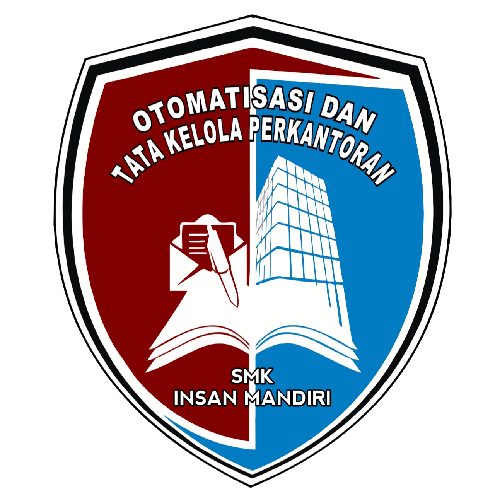
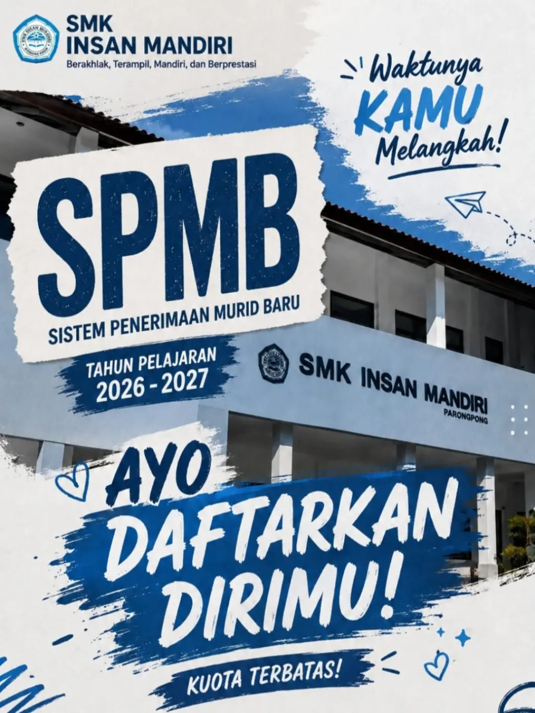

Selamat Datang di
SMK INSAN MANDIRI
SMK Insan Mandiri adalah sekolah Menengah Kejuruan berbasis Teknologi dan Informatika yang terletak di Jl. Sariwangi No. 81 dan telah berdiri sejak tahun 2013. SMK Insan Mandiri telah terdaftar di Badan Akreditasi Nasional Sekolah/Madrasah atau BAN S/M dan terakreditasi "B" atau "Baik".
PROGRAM KEAHLIAN

Otomatisasi Tata Kelola Perkantoran (OTKP) merupakan sebuah jurusan yang mempelajari hal-hal yang ada dalam bidang administrasi secara pengetahuan, keterampilan, dan sikap dalam menyelesaikan pekerjaan-pekerjaan perusahaan atau kantor.
Info Selengkapnya...Teknik Komputer Jaringan (TKJ) merupakan sebuah jurusan yang mempelajari tentang cara-cara merakit komputer, menginstalasi program komputer, dan mempelajari tentan sebuah jaringan internet.
Info Selengkapnya...KENAPA MEMILIH KAMI?
Program Unggulan
SMK Insan Mandiri memiliki 2 Program Keahlian yang unggul, yaitu Otomatisasi Tata Kelola Perkantoran (OTKP) dan Teknik Komputer Jaringan (TKJ).
PTK Profesional
- 24 Guru
- 6 Tendik
- 4 Staf
>205 Siswa
- 60 kelas X
- 65 kelas XI
- 80 kelas XII
VISI, MISI & TUJUAN
Visi
Terwujudnya SMK Insan Mandiri yang menghasilkan insan beriman, bertaqwa kepada Allah SWT, berakhlak mulia, kreatif, inovatif, mandiri, peduli lingkungan, serta mampu belajar secara mendalam untuk menghadapi tantangan global.
Misi
- Meningkatkan nilai keimanan dan ketaqwaan kepada Allah SWT sebagai dasar dalam proses pembelajaran mendalam.
- Menumbuhkembangkan jiwa nasionalis melalui pembelajaran yang mengaitkan pengetahuan dengan konteks sosial, budaya, dan kehidupan berbangsa.
- Menumbuhkan kreativitas, inovasi, dan produktivitas dengan pendekatan pembelajaran mendalam yang menekankan keterampilan berpikir kritis, kolaboratif, komunikatif, dan pemecahan masalah.
- Menumbuhkan budaya pelestarian lingkungan melalui pembelajaran kontekstual yang mendorong kepedulian, aksi nyata, dan tanggung jawab bersama.
- Mengembangkan budaya belajar sepanjang hayat dengan menekankan refleksi, pemahaman konsep secara mendalam, serta penerapan ilmu dalam kehidupan nyata dan dunia kerja.
Tujuan
- Meningkatkan keimanan dan ketaqwaan warga sekolah melalui integrasi nilai-nilai religius dalam setiap kegiatan pembelajaran dan pembiasaan sehari-hari.
- Membentuk peserta didik yang nasionalis dengan menanamkan nilai-nilai kebangsaan melalui pembelajaran kontekstual yang menghubungkan materi dengan kehidupan sosial dan budaya.
- Mengembangkan keterampilan abad 21 (critical thinking, creativity, collaboration, communication) melalui pembelajaran mendalam yang berpusat pada peserta didik.
- Mendorong peserta didik berpikir reflektif dan analitis agar mampu memahami konsep secara utuh, bukan sekadar hafalan.
- Mengintegrasikan teori dan praktik dalam setiap mata pelajaran, sehingga peserta didik mampu mengaitkan ilmu dengan dunia kerja dan kehidupan nyata.
- Menumbuhkan kepedulian terhadap lingkungan dengan melibatkan peserta didik dalam proyek, riset kecil, dan aksi nyata yang berorientasi pada pelestarian alam.
- Membentuk budaya belajar sepanjang hayat dengan membiasakan peserta didik untuk mencari, mengolah, dan memanfaatkan informasi secara mandiri serta berkelanjutan.
- Meningkatkan mutu lulusan agar siap bekerja, melanjutkan pendidikan, dan berwirausaha dengan bekal pengetahuan mendalam, keterampilan, serta sikap profesional.
AYO DAFTAR SEKARANG!

TELAH DIBUKA!
SISTEM PENERIMAAN MURID BARU SMK INSAN MANDIRI TAHUN PELAJARAN 2026/2027!
Ayo, daftarkan anak bapak/ibu di SMK Insan Mandiri sekarang! Tersedia jurusan Manajemen Perkantoran dan Layanan Bisnis (MPLB) dan Teknik Jaringan Komputer dan Telekomunikasi (TJKT).
Persyaratan:
- Mengisi formulir pendaftaran
- Fotokopi Akta Kelahiran
- Fotokopi Kartu Keluarga
- Fotokopi KTP Orang Tua
- Fotokopi Surat Lulus
- Fotokopi Ijazah
- Pas Foto 3x4 (5 lembar)
Keunggulan:
- Lingkungan Islami
- Guru Profesional & Berkompeten
- Fasilitas Lengkap
- Pembelajaran Berkualitas
Tunggu apa lagi, ayo daftar sekarang ke
Kampus SMK Insan Mandiri
Jalan Sariwangi No. 81 Kec. Parongpong Kab. Bandung Barat
Info lebih lanjut: 08953 8998 4071 (Ria Febriana)